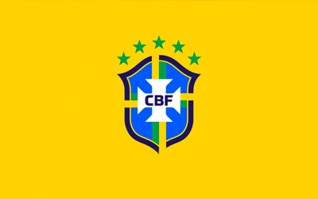
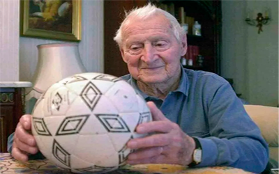
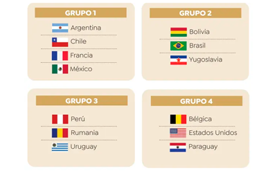
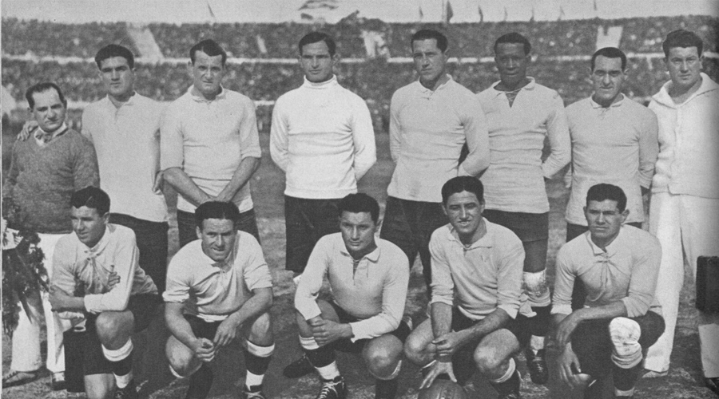
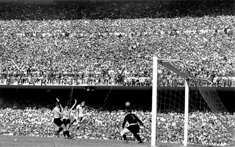

Brasil es el país más exitoso en la historia de los Mundiales, con un total de 5 campeonatos ganados (1958, 1962, 1970, 1994 y 2002). Además, es el único país que ha participado en todos los torneos desde el primero en 1930.

El primer gol en la historia de los Mundiales lo marcó Lucien Laurent, un jugador francés, durante el partido inaugural entre Francia y México en 1930.

La Copa Jules Rimet (el trofeo original) fue robada en 1966 en Inglaterra, pero fue encontrada por un perro llamado Pickles, que se convirtió en un héroe nacional.
El gol más rápido en la historia de los Mundiales lo anotó Hakan Şükür de Turquía, en solo 11 segundos contra Corea del Sur en 2002.
El Mundial de 1930 en Uruguay fue el más corto de la historia, con solo 13 partidos jugados en menos de un mes. Además, solo participaron 13 selecciones.

Uruguay es el único país que ganó el Mundial en su primera participación, en 1930, cuando además fueron los anfitriones.

La final del Mundial de Brasil 1950, jugada en el estadio Maracaná entre Brasil y Uruguay, tuvo una asistencia estimada de 199,854 personas, un récord que nunca se ha superado.
